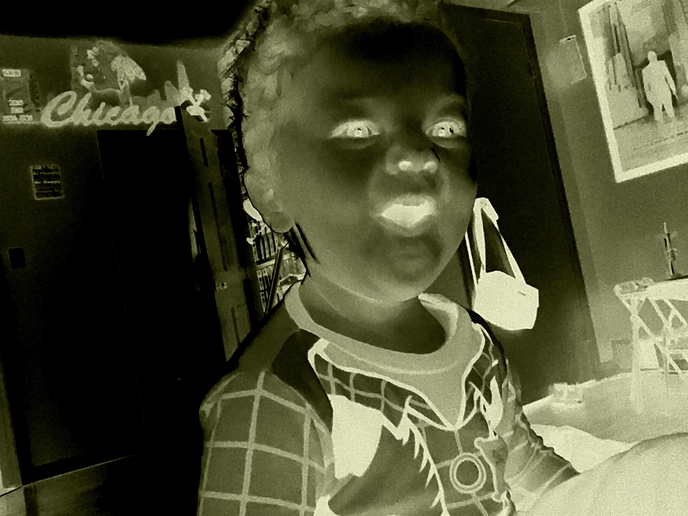
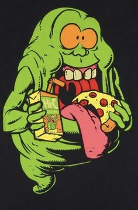

Well, you already know my name, so let's get into a little more personal detail. I am 34 years young and am currently living in McHenry. I have four kids, ages 8, 7, 3, and 2, with my my partner, Eddie. We will celebrate ten years together this upcoming Christmas. I grew up in the city of Chicago, more specifically, the Northwest Side. I am a city girl at heart, and although I do miss all of the eclectic and diverse food, I certainly do not miss living in the city. McHenry has been my home for about 6 years now and I am loving the area! The nightlife reminds me of living in the city but you still get the suburban feel too, which makes it feel cozy. It's really the best of both worlds.
Where to start? Well, I guess I can say my all time favorite thing to do is EAT. I love trying new cuisines and unfamiliar delicacies. Chicago was the mecca of varying tastes. No matter what the choice, it was bound to be delicious. Honestly, I am pretty much a big kid at heart. I love reading, crossword puzzles, board/card games, watching tv/movies (especially Marvel, DC, Star Wars, Harry Potter, etc.), pilates, and hanging out with my family. I also love crafting, antiquing, and rummaging through garage sales/thrift stores. There are so many lost treasures at those places! I could probably talk forever about the things I love to do, so lets stop here before this whole webpage turns into a list of my favorite things.
I fell in love with computer science at young age, which I think was my freshman year of high school. At that time (although computers had been out for a little while) technology was about to explode with the internet, email, and the very first strings of social media. I took an intro to computers class my freshman year that went over computer basics, like learning how to type and intro to microsoft programs, and while it was informative, I wanted to learn more. After Myspace was created, users started playing around with customizing their profiles, changing the boring, default settings into things more suited to their personalities (I was no exception). The idea of being able to completely change the look of the webpage was fascinating to me, so I dove in headfirst and started playing around with the background colors and text boxes. Eventually, I worked my way up to completely changing the entire look of my whole profile. I was hooked. It was fun. Junior and Senior year I joined the Yearbook staff and really learned to love graphic design, and how you could manipulate art on a screen. It gave me another opportunity to be artistic in a way I had never known before. It was addiciting! I've been hooked on computers ever since. Right now, I am set to graduate this spring with my Associates in Applied Sciences in Network Security. As long as I'm working on a computer, it's like a dream come true.
McHenry County College...this course was just added as an optional core class for my degree and I was immediately interested. Coding was always fun for me in my early teens because it opened a pathway to my current field. It helped me see that I could be creative in a technological space for the first time without having to be great at illustrating on paper. I had always loved art, but was never the best at drawing. I was so happy that I found computer art because it really gave me a confidence I never knew I had.
Picture 1: My Daughters' Aesthetic
Picture 2: My Favorite Ghost
